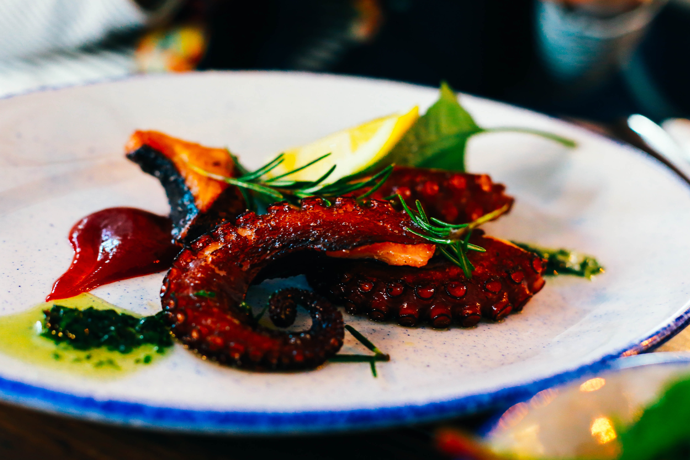
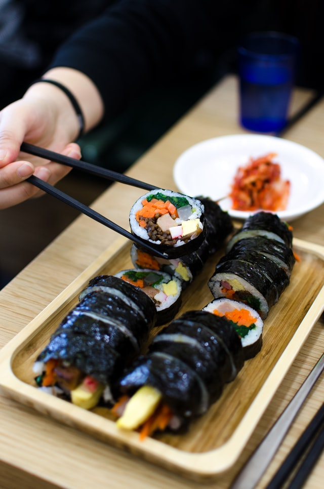
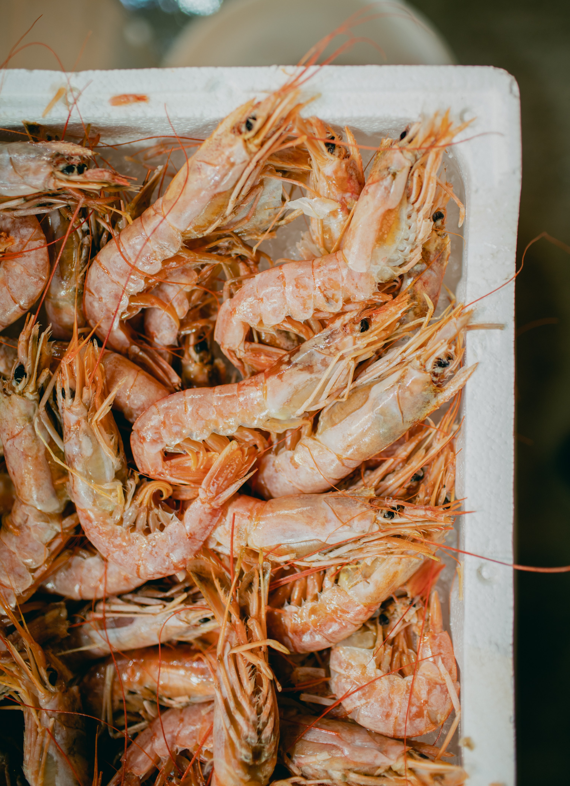
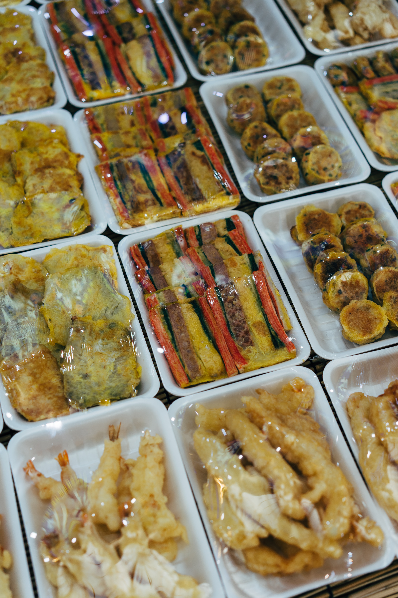

Some of the most attractive features about South Korea is the food.
Food plays an important role in describing the type of culture of the country.
An example would be that seafood may be prominent in countries near water.
This next part will show some of the foods that are popular and very well-liked in South Korea!
When South Korean cuisine comes up in a conversation, kimchi MUST be mentioned somewhere.
It is arguably the most popular side dish in South Korea and rightfully so.
Nakji

Nakji is
Squid
As mentioned above, squid is one of the more popular seafoods in South Korea.
Street Vendor Foods
Street vendor foods are very popular among South Korean citizens, as well as tourists.
The foods sold here are quite savory and catches your attention.
Kimbap

Kimbap is such a versatile food.
Shrimp

Like a lot of countries near salt water, shrimp is also very common and popular in South Korea.
Varieties

There are many types of side dishes that are popular to eat just about anytime, anywhere.